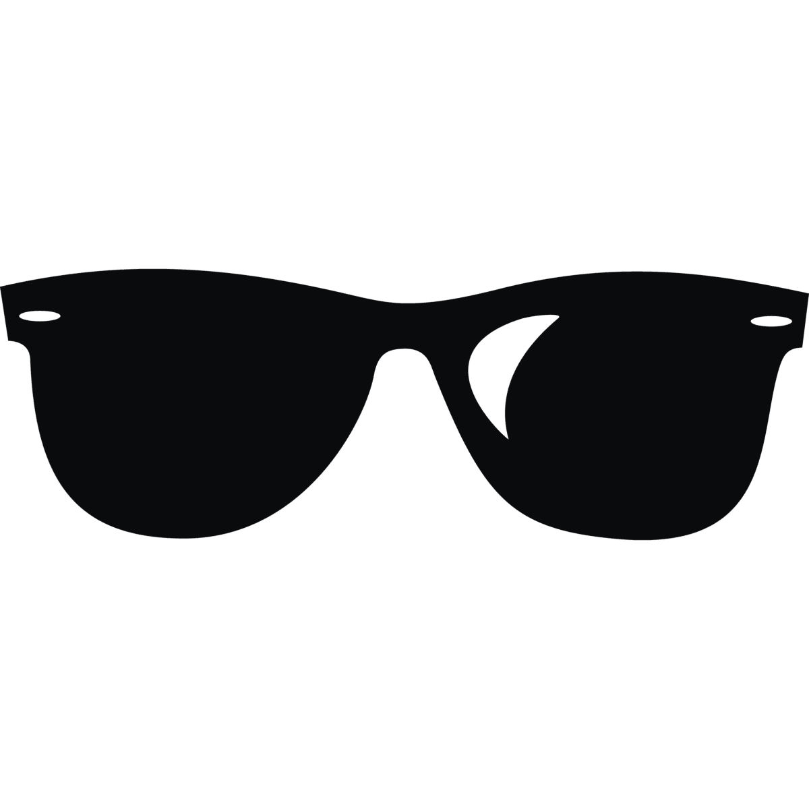

LE PROJET
Qu'est-ce qui motive les participants aux études quali ?
Une enquête inédite,
une question centrale #LaClasseDallas
Une initiative personnelle, indépendante et artisanale,
une team du tonnerre #ArtisansDuQuali
Des résultats surprenants et des recos actionnables pour mieux recruter et mieux animer #QualiGlory

Un RDV entre professionnels
des études, une communauté réunie par un intéret commun #InstitutsOnly